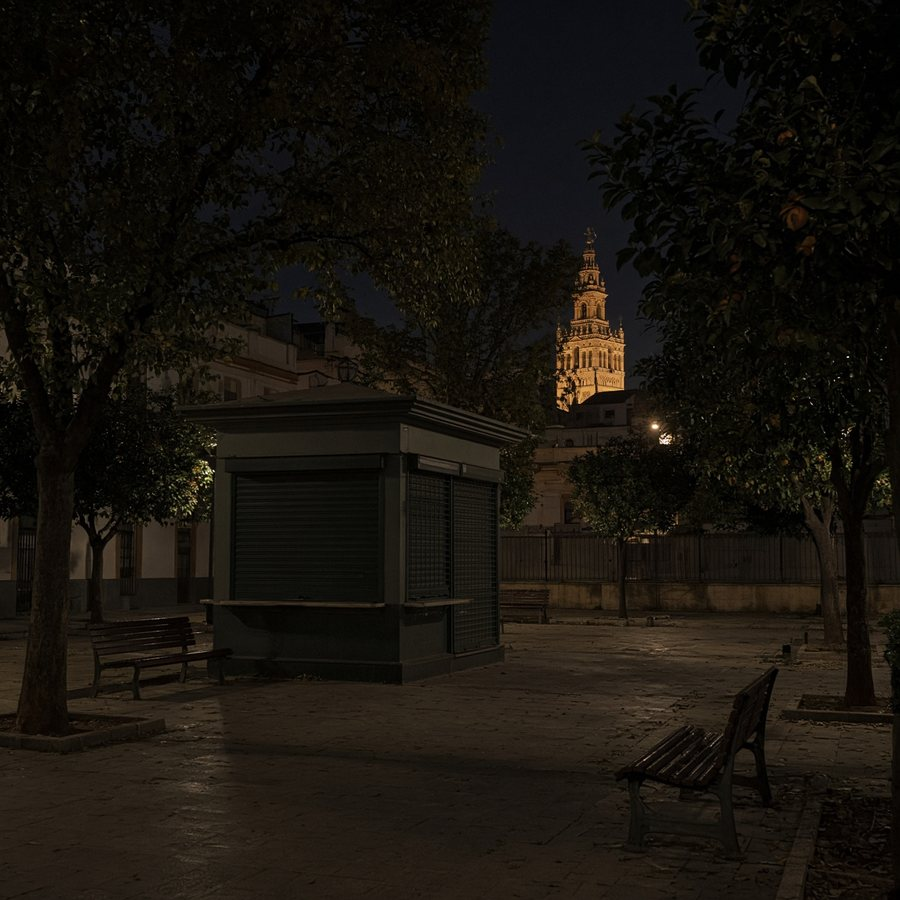
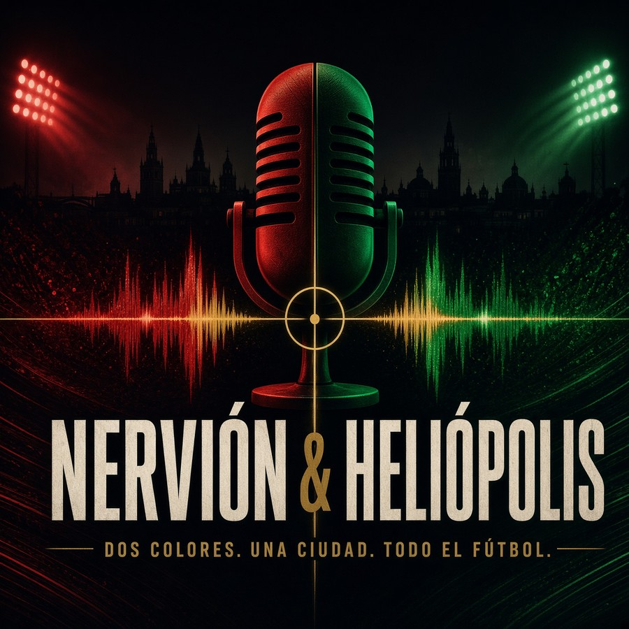
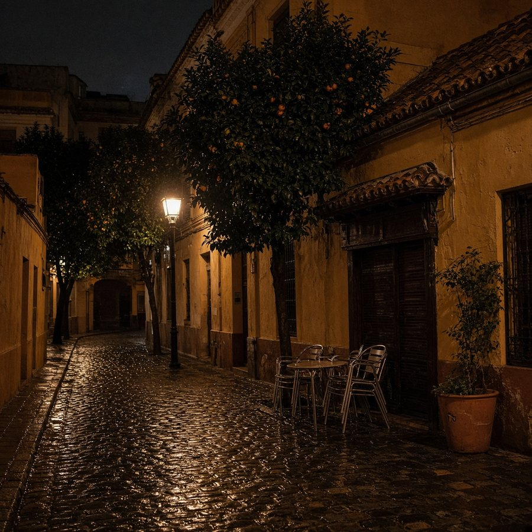
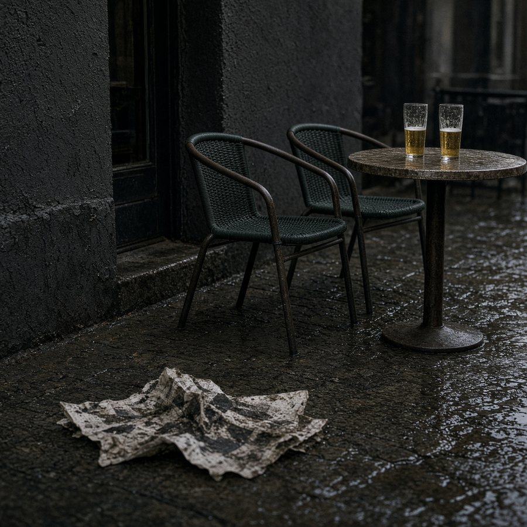

PODCAST INDEPENDIENTE ·
SEVILLA Y BETIS
SEVILLA Y BETIS
DOSCOLORES.UNACIUDAD.TODO ELFÚTBOL.
Podcast independiente. Sevilla y Betis.
Jornada, derbi y calle.

ÚLTIMOS EPISODIOS
ÚLTIMOS EPISODIOS
PROGRAMAS
NERVIÓN & HELIÓPOLIS
Dos colores. Una ciudad.

NERVIÓN
Sevilla FC
HELIÓPOLIS
Real Betis

DERBI
Cuando la ciudad se parte
EPISODIOS · POSTPARTIDO · BETIS
Archivo de programas postpartido del Real Betis.
POSTPARTIDO LILLE-BETIS 8-9-2026
Victoria del Real Betis en Lille · Duración 14:07
▶ Escuchar episodioCONTROL
Una sola voz. Un club por episodio. Siempre por debajo de 30 minutos.
Una sola voz
El presentador conduce, analiza y cierra. Sin diálogos de relleno.
Un club por episodio
Sevilla y Betis, mismo estándar. Nervión y Heliópolis, misma ciudad.
27–29 minutos
Guion cronometrado. Previa y postpartido. Cero relleno.
Datos primero
Información verificada. Después, opinión.
INSTALAR
Queda en el teléfono como una app. Icono, pantalla completa, sin tienda.
Nervión & Heliópolis
Libre · Sin anuncios · Sin cuenta
Android: Chrome → ⋮ → Instalar aplicación. iPhone: Safari → Compartir → Añadir a pantalla de inicio.